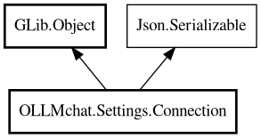

Connection
Object Hierarchy:

Description:
public class Connection : Object, Serializable
Represents a single server connection configuration.
Stores connection details for Ollama or OpenAI-compatible API servers. Used by Client to establish API connections.
Example
var connection = new Settings.Connection() {
name = "Local Ollama",
url = "http://127.0.0.1:11434/api",
is_default = true
};
var client = new Client(connection);
Since:
1.0
Content:
Properties:
- public string api_key { get; set; }
Optional API key for authentication
- public ArrayList<string> hidden_models { get; set; }
List of model names to hide from the UI
- public bool is_default { get; set; }
Whether this is the default connection
- public HashMap<string,Model> models { get; }
Models loaded from the server, keyed by model name.
- public string name { get; set; }
Connection alias/name (e.g., "Local Ollama", "OpenAI", "Remote
Server")
- public uint timeout { get; set; }
HTTP request timeout in seconds.
- public string url { get; set; }
Server URL (e.g., http:\/\/127.0.0.1:11434\/api)
Creation methods:
Methods:
- public Connection clone ()
Creates a clone of this Connection object with all properties copied.
- public override bool deserialize_property (string property_name, out Value value, ParamSpec pspec, Node property_node)
- public unowned ParamSpec? find_property (string name)
- public Value get_property (ParamSpec pspec)
- public void init ()
Initializes runtime state (soup session).
- public async void load_models () throws Error
Loads all available models from the server and stores them in models.
- public override Node serialize_property (string property_name, Value value, ParamSpec pspec)
- public void set_property (ParamSpec pspec, Value value)
- public Message soup_message (string method, string url, string? body = null)
Creates a Soup.Message with authorization headers set.
Fields:
Inherited Members:
All known members inherited from class GLib.Object
- @get
- @new
- @ref
- @set
- add_toggle_ref
- add_weak_pointer
- bind_property
- connect
- constructed
- disconnect
- dispose
- dup_data
- dup_qdata
- force_floating
- freeze_notify
- get_class
- get_data
- get_property
- get_qdata
- get_type
- getv
- interface_find_property
- interface_install_property
- interface_list_properties
- is_floating
- new_valist
- new_with_properties
- newv
- notify
- notify_property
- ref_count
- ref_sink
- remove_toggle_ref
- remove_weak_pointer
- replace_data
- replace_qdata
- set_data
- set_data_full
- set_property
- set_qdata
- set_qdata_full
- set_valist
- setv
- steal_data
- steal_qdata
- thaw_notify
- unref
- watch_closure
- weak_ref
- weak_unref
All known members inherited from interface Json.Serializable
- default_deserialize_property
- default_serialize_property
- deserialize_property
- find_property
- get_property
- list_properties
- serialize_property
- set_property